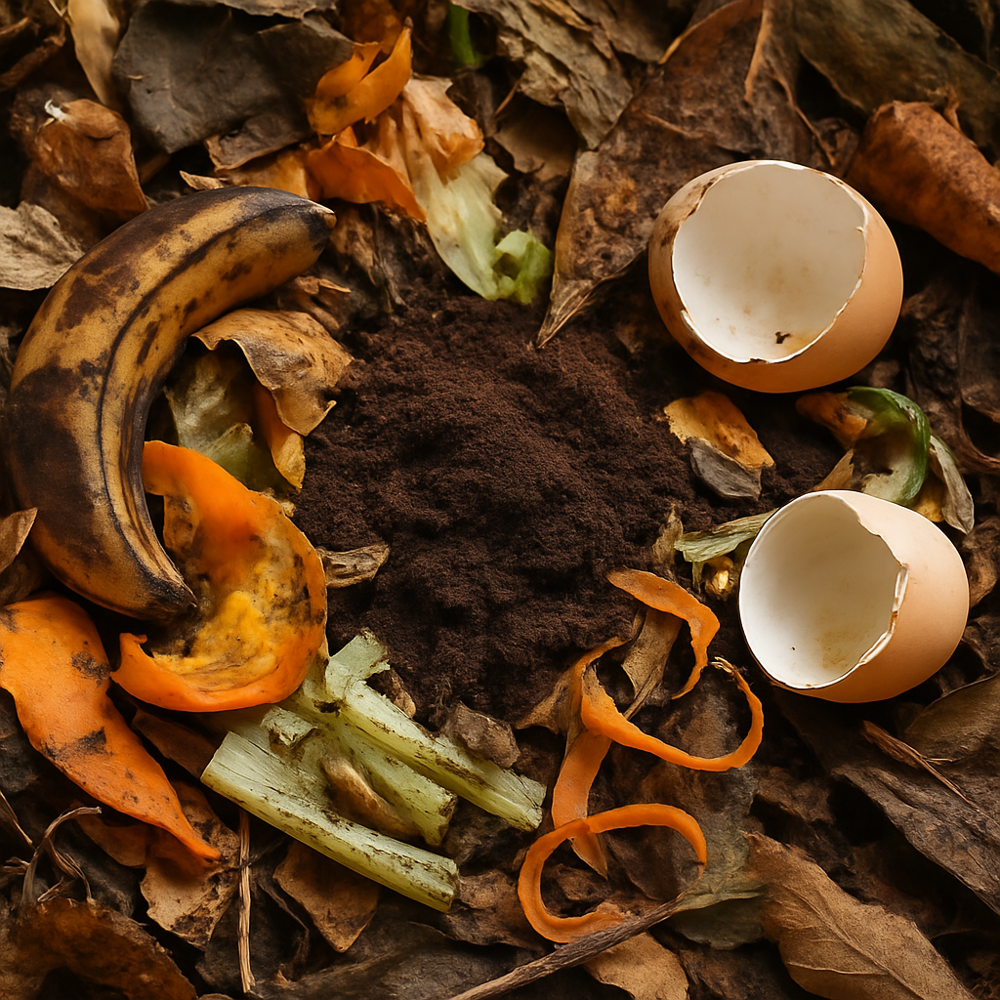
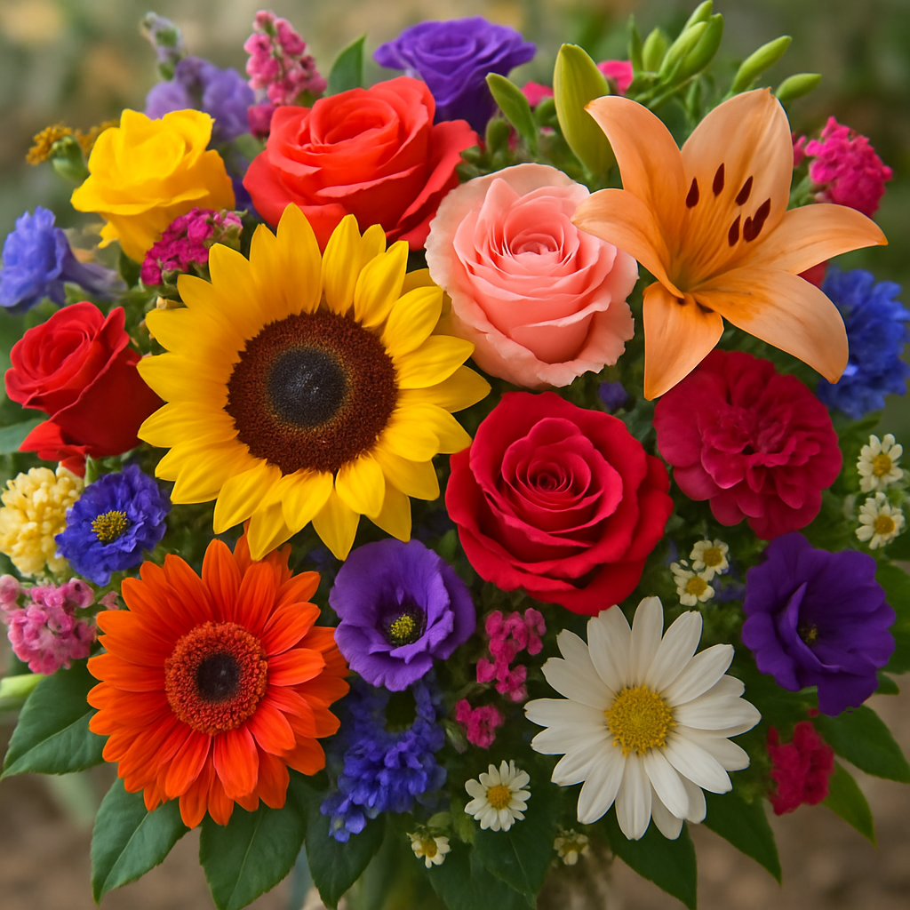
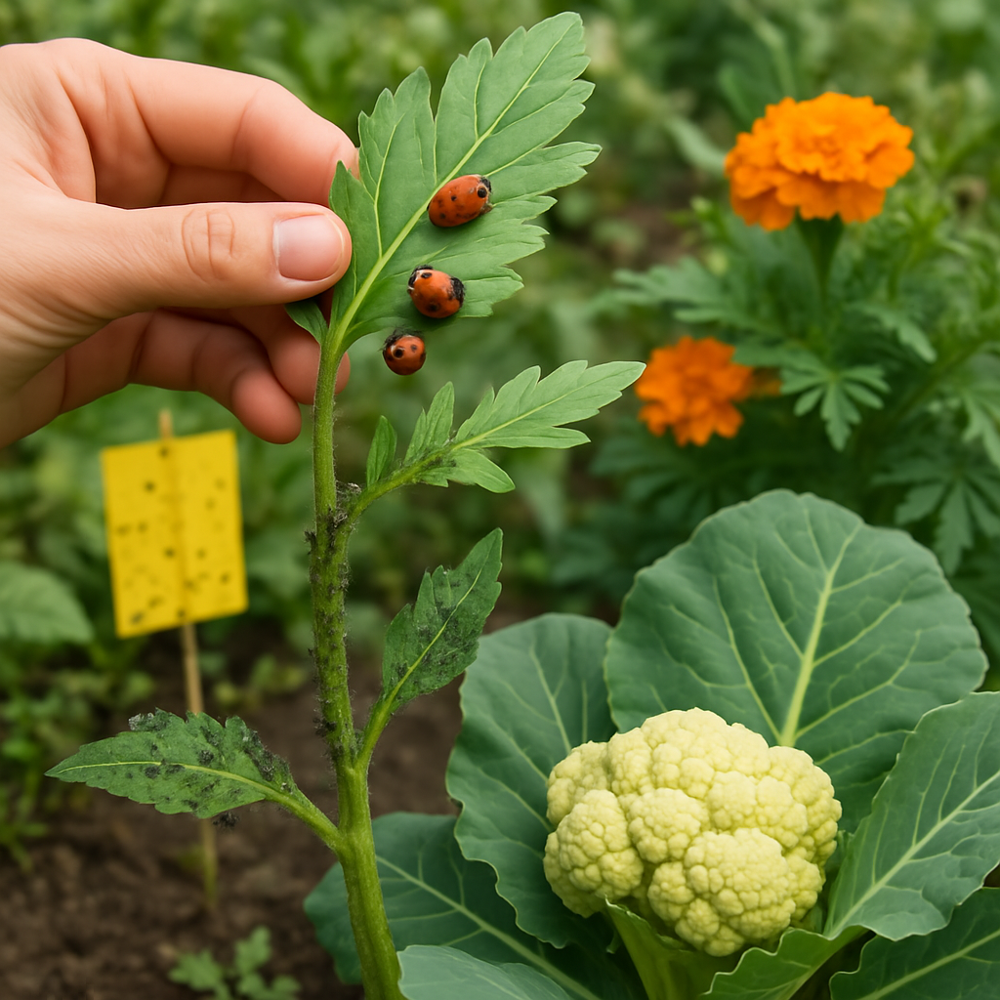

Compostagem: O Ciclo Natural de Renovação do Solo

A compostagem é o processo biológico natural no qual microorganismos (bactérias, fungos, minhocas, entre outros) decompõem a matéria orgânica — como restos de alimentos, folhas secas e resíduos vegetais — transformando-a em um material fértil e estável: o composto orgânico.
Esse composto é um adubo natural riquíssimo em nutrientes, que melhora a estrutura do solo e substitui ou complementa o uso de fertilizantes químicos, tornando o cultivo mais sustentável.
Por que fazer compostagem?
- Reduz o lixo orgânico e diminui o volume de resíduos destinados a aterros sanitários.
- Melhora o solo aumentando a fertilidade, retenção de água e estimulando a vida microbiana benéfica.
- Economia, reduzindo a necessidade de adubos químicos e irrigação excessiva.
- Sustentabilidade, diminuindo a emissão de gases poluentes como metano.
- Controle natural de doenças, com solos nutridos e plantas mais resistentes.
Materiais que podem ser compostados
| Permitidos |
Evitar |
- Cascas e restos de frutas e legumes
- Borra de café e filtros de papel
- Saquinhos de chá (sem plástico)
- Casca de ovos triturada
- Folhas secas, galhos picados, serragem não tratada
- Grama cortada
- Papelão e papel picado (sem tintas tóxicas)
|
- Restos de carne, peixe, ossos e laticínios
- Óleos e gorduras
- Excrementos de animais domésticos (cães e gatos)
- Alimentos cozidos
- Plantas doentes ou infestadas
|
Como fazer compostagem básica
- Escolha um local protegido e ventilado.
- Inicie com camadas alternadas de materiais secos (carbono) e úmidos (nitrogênio).
- Mantenha o material aerado: revolva a pilha a cada 1-2 semanas.
- Controle a umidade: deve parecer uma "esponja úmida".
- Em 2 a 4 meses o composto estará pronto, com cheiro de terra e cor escura.
Como saber que o composto está pronto?
- Cheiro agradável, semelhante a solo fértil.
- Cor escura e textura uniforme.
- Temperatura ambiente (não há mais calor da decomposição).
- Ausência de pedaços reconhecíveis dos materiais originais.
Aplicação do composto no cultivo
- Incorporar ao solo antes do plantio (adubação de base).
- Misturar em vasos e canteiros.
- Aplicar como cobertura em volta das plantas (adubação de cobertura).
- Misturar na produção de mudas.
Dicas práticas
- Evite excesso de material úmido para não gerar mau cheiro.
- Quanto menor o tamanho dos resíduos, mais rápido será o processo.
- Se aparecerem moscas ou odores fortes, sinal de desequilíbrio (excesso de material verde ou pouca aeração).
Curiosidade: 1 kg de restos de alimentos pode gerar cerca de 400g de composto de alta qualidade!
Flores na Agricultura — Beleza e Função no Cultivo

Embora as flores sejam frequentemente associadas apenas à beleza, elas desempenham papéis estratégicos que aumentam a produtividade, controlam naturalmente pragas, melhoram a saúde do solo e promovem equilíbrio ecológico.
Funções ecológicas das flores no cultivo
- Atração de polinizadores: abelhas, borboletas e beija-flores são essenciais para a fecundação de muitas culturas, garantindo uma produção eficiente.
- Controle biológico de pragas: flores liberam aromas e substâncias que repelem insetos ou funcionam como plantas iscas, protegendo as culturas principais.
- Atração de inimigos naturais de pragas: insetos benéficos como joaninhas, vespas parasitóides e aranhas são atraídos pelas flores, ajudando no controle natural.
- Diversificação e equilíbrio ecológico: ambientes floridos favorecem uma cadeia alimentar completa e reduzem desequilíbrios populacionais de pragas.
Exemplos de flores úteis na horta e no pomar
| Flor |
Função |
Observação |
| Cravo-de-defunto (Tagetes) |
Repelente de nematoides e insetos do solo |
Efetivo em solos contaminados |
| Capuchinha (Tropaeolum majus) |
Planta isca para pulgões |
Também comestível como PANC |
| Girassol (Helianthus annuus) |
Atrai polinizadores e predadores naturais |
Cresce rápido e é vistoso |
| Manjericão (Ocimum basilicum) |
Atrai abelhas e repele moscas |
Utilizado também na culinária |
| Lavanda (Lavandula spp.) |
Repelente de mosquitos e traças |
Aroma agradável e forte |
| Alecrim (Rosmarinus officinalis) |
Repelente de algumas pragas |
Planta resistente e aromática |
Como planejar a inclusão de flores no cultivo
- Distribuição intercalada: plantar flores entre fileiras de hortaliças ou frutíferas.
- Faixas de bordadura: criar faixas laterais com flores ao redor da plantação.
- Canteiros mistos: integrar flores e hortaliças no mesmo canteiro.
- Cercas vivas floridas: utilizar arbustos floridos como barreira natural.
Vantagens de um cultivo florido
- Redução do uso de pesticidas.
- Melhora da polinização e aumento da produtividade.
- Preservação de insetos benéficos.
- Atratividade visual do local, importante para vendas e agroecoturismo.
- Maior biodiversidade e equilíbrio ambiental.
Cuidados ao introduzir flores
- Escolher flores adaptadas ao clima local.
- Evitar espécies invasoras que possam competir com as culturas.
- Manter flores saudáveis com podas e adubações regulares.
- Planejar floração contínua ao longo do ano para garantir oferta constante de pólen e néctar.
Curiosidade: Em sistemas com flores bem distribuídas, a polinização pode aumentar a produção de frutos em até 30% em algumas culturas.
Controle de Pragas — Manejo Sustentável e Equilíbrio na Agricultura

As pragas agrícolas são organismos que atacam as plantas cultivadas, causando perdas na produção e afetando a qualidade dos alimentos. O controle adequado é essencial para garantir a saúde das culturas e a segurança dos alimentos.
O uso excessivo de defensivos químicos pode causar contaminação ambiental, resistência das pragas, prejuízos à saúde e desequilíbrio ecológico. Por isso, o manejo sustentável e integrado é a melhor estratégia.
O que é Controle Integrado de Pragas (CIP)?
O CIP combina diversas estratégias para prevenir, monitorar e controlar pragas, minimizando o uso de químicos e mantendo as pragas em níveis que não prejudiquem a produção.
Etapas do Controle Integrado de Pragas
-
Prevenção: escolha de sementes e mudas saudáveis, plantio de variedades resistentes, boa adubação, rotação de culturas e controle de plantas hospedeiras.
-
Monitoramento: inspeções regulares, uso de armadilhas adesivas e registro de ocorrências.
-
Controle biológico: uso de inimigos naturais como joaninhas, vespas parasitóides e aranhas, além do plantio de flores que atraem esses predadores.
-
Controle cultural: plantio em épocas adequadas, eliminação de restos contaminados e espaçamento correto das plantas.
-
Controle mecânico: retirada manual de folhas infestadas, uso de telas de proteção e armadilhas.
-
Controle químico racional: uso criterioso e somente quando necessário, com produtos seletivos e alternância para evitar resistência.
Exemplos de pragas comuns e seus controles
| Praga |
Plantas Afetadas |
Manejo Sustentável |
| Pulgões |
Alface, morango, cenoura |
Joaninhas, capuchinha (planta isca), óleo de neem |
| Mosca-da-fruta |
Frutíferas |
Armadilhas de feromônio, coleta de frutos caídos |
| Lagartas (spodoptera, helicoverpa) |
Hortaliças e legumes |
Vespas parasitóides, Bacillus thuringiensis (biológico) |
| Mosca-minadora |
Folhosas |
Remoção manual de folhas afetadas, controle biológico |
| Ácaros |
Morango, tomate |
Pulverização com calda de sabão e enxofre (orgânico) |
Vantagens do Controle Integrado de Pragas
- Redução dos custos com defensivos químicos.
- Produção de alimentos mais saudáveis e seguros.
- Preservação da biodiversidade.
- Menor contaminação do solo e da água.
- Agricultura sustentável de longo prazo.
Dicas práticas
- Não use apenas uma técnica isolada; combine métodos.
- Favoreça o equilíbrio ecológico da área.
- Treine os trabalhadores para identificar pragas e inimigos naturais.
- Registre o monitoramento em cadernos ou aplicativos.
Curiosidade: Com manejo integrado, o uso de agrotóxicos pode ser reduzido em até 70% em algumas culturas.